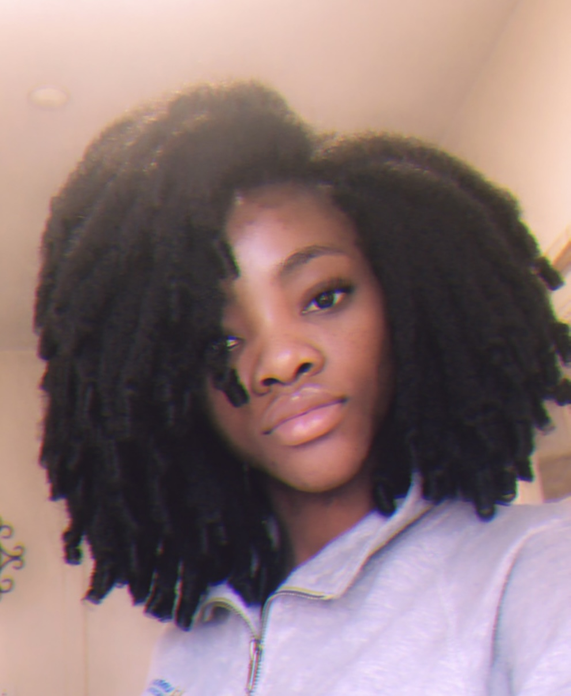

Crotchet Styles
Crochet hairstyles are a protective style where hair extensions are attached to your natural hair using a crochet technique.In this method, the natural hair is first braided into cornrows or another base pattern, and then pre-looped extensions are attached to the cornrows using a crochet hook.
Here are some key features of crotchet styles:
-
Versatility: Here are a variety of options I offer for crotchet styles
- Individual Crotchet method: Pre-looped faux locs or braids are attached individually to single briaded sections of natural hair.
- Traditional crotchet Hair extensions, pre-looped faux locs or briads are attached to cornrows.
- Quick Installation: Crochet braids take less time to install compared to traditional box braids or individual twists. Depending on the complexity and style, the installation can take anywhere from 2 to 4 hours, making it a time-efficient option.
- Less Tension: Crochet hairstyles are often lighter than traditional sew-ins or braided extensions because the hair is attached in small sections, reducing tension on the scalp. This makes the style comfortable to wear over an extended period.
- Low Maintenance: Once installed, crochet styles are relatively low-maintenance. You only need to care for the scalp and the extensions by moisturizing and occasionally refreshing the curls or waves.
- Affordability: Crochet styles are often more affordable than other types of weaves or braided styles.
- Long-Lasting: Crochet hairstyles can last anywhere from 4 to 8 weeks, depending on how well they are maintained. The natural hair remains protected, and with proper care, the style can remain fresh for weeks.
In summary, crochet hairstyles are a versatile and protective way to style natural hair.They offer a wide range of textures and styles, are lightweight and comfortable, and are easy to install and maintain. Crochet styles are a popular choice for those seeking a low-maintenance, long-lasting, and stylish look while keeping their natural hair healthy and protected.